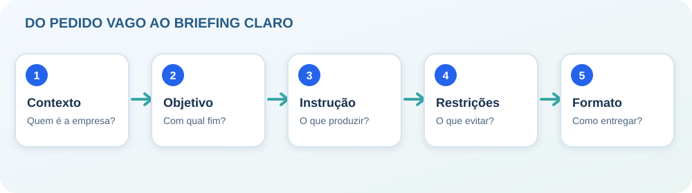

Como fazer bons pedidos ao Gemini
Peça com clareza para receber respostas mais úteis.
Leia o conceito principal com uma linguagem simples.
Copie o exemplo e experimente no Gemini.
Confira a resposta e tente no seu contexto.
O que você vai aprender
Você vai aprender a escrever pedidos claros para o Gemini e comparar os resultados.
É simplesmente o pedido ou a instrução que você escreve para a IA.
Cinco informações para organizar seu pedido: contexto, objetivo, instrução, restrições e formato.
Entenda o exemplo, um passo por vez
Use as setas para avançar. Se estiver em sala, escolha “Apresentar” para exibir apenas a etapa atual.
👁️ As cinco informações de um bom pedido
Se a resposta ficou vaga, verifique qual dessas cinco peças está ausente ou pouco definida.
💡 Analogia: pedido em um restaurante
O pedido que você escreve para a IA também é chamado de prompt. Um pedido como “faça um anúncio” deixa muita coisa em aberto. Informar o produto, o público, o objetivo e o formato costuma tornar a resposta mais útil.
🛠️ Construtor de prompt
Um bom prompt é um bom briefing
O Gemini não conhece o negócio como alguém que trabalha nele todos os dias. Um prompt é o equivalente ao briefing: o conjunto de informações que orienta quem vai executar a tarefa.

- ContextoQuem é a empresa?
- ObjetivoCom qual fim?
- InstruçãoO que produzir?
- RestriçõesO que evitar?
- FormatoComo entregar?
☕ E na Café Horizonte?
A Café Horizonte deseja divulgar o combo de café com pão de queijo. Dizer o canal (Instagram), o público (pessoas que trabalham perto), a intenção (atrair visitas) e o limite (sem inventar preços) produz um briefing mais utilizável.
Guarde esta ideia: Se faltar contexto, objetivo, instrução, restrições ou formato, pergunte: essa ausência muda o resultado que espero?
🤔 Pare e pense — Por que “não invente preços ou promoções” é uma restrição útil?
Porque o texto pode parecer convincente mesmo quando o modelo não conhece os preços da empresa. A restrição torna a tarefa mais segura, embora não dispense a revisão.
Da solicitação vaga ao briefing C.O.I.R.F.
Você é o responsável pela campanha de café da manhã. Um pedido sem contexto produz conteúdo genérico; um briefing orienta o resultado.
Um pedido bom entrega ao Gemini as informações que uma pessoa precisaria para cumprir a tarefa. No exemplo, preço, público e canal são fatos; estilo e tamanho são preferências; “não inventar promoções” é um limite.
O que observar: O Gemini pode escrever um texto persuasivo e ainda assim incluir um fato inexistente. Verifique o valor, as condições e a chamada para ação antes de publicar.
- Pedido inicial: “Faça uma propaganda boa”.
- Fatos: combo café coado + pão de queijo por R$ 12,00.
- Público: trabalhadores da região; canal: Instagram.
- Objetivo: divulgar o combo sem inventar desconto ou entrega.
Faça junto, passo a passo
- Reconheça quais informações faltavam no pedido inicial.
- Cole o prompt completo no Gemini e compare com o comando “Faça uma propaganda boa”.
- Use o construtor C.O.I.R.F. da própria aula para criar uma versão sua.
Experimente no Gemini
Copie este comando e teste em gemini.google.com. Os dados são inventados para a atividade.
🔎 Ver um resultado de referência e o que conferir
A saída deve conter os três elementos solicitados, respeitar o preço de R$ 12,00 e não mencionar benefícios não informados. A qualidade não se mede apenas por “ficou bonito”, mas por adequação ao público e fidelidade aos fatos.
Este é um exemplo elaborado para estudo, não uma resposta recebida automaticamente do Gemini. Compare os fatos e a estrutura; a ferramenta pode gerar outra redação.
🧠 Tome uma decisão
Qual elemento evita criar uma informação comercial que não existe?
Selecione uma alternativa para receber a explicação.
✅ Confira seu resultado
0 de 3 critérios conferidos.
Uma floricultura vende um buquê simples por R$ 35. Crie um pedido ao Gemini para elaborar uma legenda de Instagram destinada a moradores do bairro, com até 60 palavras, sem criar descontos ou condições de entrega.
Você pode adaptar a situação ao seu negócio. Use somente informações inventadas ou autorizadas.
Concluiu? Veja como conferir sua resposta
Confira se o pedido informou contexto, objetivo, tarefa, limites e formato. O resultado deve mencionar R$ 35 sem acrescentar outros preços ou promessas.
Treinar mais (opcional)
🧪 Desafio — Três versões
Escolha uma necessidade real do seu trabalho e crie três versões do prompt:
- uma versão curta;
- uma versão com C.O.I.R.F.;
- uma versão com um exemplo do resultado esperado.
Teste as três no Gemini e compare: clareza, adequação, quantidade de ajustes e risco de invenção.
📚 Conceitos em detalhe (consulte quando precisar) · 3 leituras
1. Cinco partes de um bom pedido: C.O.I.R.F.
C — Contexto
Qual é a situação? Quem é a empresa, o cliente ou o cenário?
O — Objetivo
Que resultado você quer alcançar?
I — Instrução
O que exatamente a IA deve fazer?
R — Restrições
Quais limites, cuidados ou regras precisam ser respeitados?
F — Formato
Como a resposta deve ser apresentada?
2. Compare
Prompt vago
Prompt estruturado
O segundo não é “bom” apenas porque é maior. Ele é melhor porque reduz decisões que a IA teria de adivinhar.
3. Restrições úteis
Restrições não servem apenas para tamanho. Elas podem proteger qualidade e segurança.
Qualidade
“Se não houver informação suficiente, indique o que falta.”
Fonte
“Use somente o conteúdo fornecido abaixo.”
Estilo
“Use linguagem simples, sem jargões.”
Formato
“Responda em tabela com quatro colunas.”
Guarde seu melhor prompt
Um bom prompt vale ser reaproveitado.
Passo a passo
- Monte um prompt C.O.I.R.F. para uma tarefa que você repete.
- Salve-o como um recurso reutilizável do Gemini (como um Gem, se disponível) ou em um documento de “biblioteca de prompts”.
- Teste-o duas vezes com dados diferentes e veja se o resultado se mantém.
Resultado para mostrar
O prompt salvo e dois resultados diferentes gerados a partir dele, mostrando que o método funciona de forma repetível.
Use sempre dados fictícios. Recursos e nomes de ferramentas variam conforme conta, país e data; confira o que está disponível para você.
Confira o que aprendeu
🔎 Aprofunde o tema (opcional) · 3 leituras
⚠️ Prompt detalhado não é garantia de verdade
Um prompt melhor aumenta a chance de receber uma resposta adequada à tarefa, mas não transforma a IA em uma fonte infalível. Para fatos, números, regras, preços, leis ou informações atuais, continue validando.
🧬 O que faz um pedido funcionar
| Elemento | Pergunta que ele responde | Exemplo |
|---|---|---|
| Contexto | O que a IA precisa saber sobre a situação? | “Tenho uma cafeteria de bairro.” |
| Objetivo | Por que estou pedindo isso? | “Quero aumentar o movimento de manhã.” |
| Instrução | Qual tarefa deve ser executada? | “Crie três ideias de campanha.” |
| Restrições | O que não pode acontecer ou quais limites existem? | “Não invente preços.” |
| Formato | Como quero usar a resposta? | “Tabela com tema, canal e CTA.” |
⏸️ Pare e pense
Todo prompt precisa conter as cinco partes do C.O.I.R.F.?
Não. O método é um guia. Tarefas simples podem funcionar com menos elementos; tarefas ambíguas ou importantes normalmente precisam de mais contexto e limites.
“Atue como especialista” melhora automaticamente a qualidade?
Não. A descrição de um papel pode orientar estilo e foco, mas não cria conhecimento, acesso a dados ou autoridade que o modelo não possua.
Como isso ajuda no seu trabalho?
Pegue uma solicitação que você faria por mensagem a um colega. Reescreva usando C.O.I.R.F. e observe quais informações você normalmente deixa implícitas. Esse exercício ajuda a escrever prompts mais claros sem torná-los desnecessariamente longos.
Minhas anotações (opcional)
📝 Meu caderno de aprendizagem
Registre aqui uma ideia, dúvida ou aplicação para o seu negócio.
Terminei esta aula
Fez a leitura e experimentou a atividade? Salve esta aula como concluída.